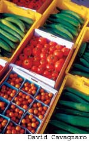
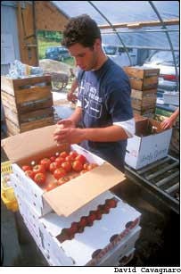
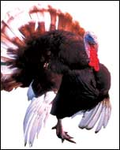
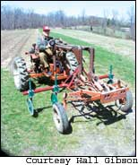
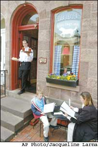
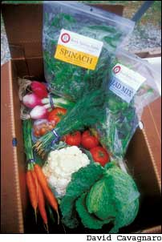

Issue # 211- August/September 2005
People across the country are finding new and reliable ways to put fresher, healthier food on the dinner table. They are buying locally - milk, eggs and meat from the farm down the road; delicious tomatoes and peppers from an open-air market downtown; and herbs from a next-door neighbor. Increasingly, such choices are easier to find.
More than 3,000 farmer’s markets, 1,000 Community Supported Agriculture (CSA) programs and hundreds of natural food co-ops have answered the call for “Real Food” across the United States, and those numbers continue to grow. Meanwhile, local food also is appearing on menus from upscale restaurants to school cafeterias, hospitals and other community-based food services.
Ideas about the importance of local and organic food that took root in the 1970s have blossomed into a Real Food Revival that now supports large numbers of small-scale farmers and growers on the local level. One reason for this growth is that consumers are beginning to voice their concerns about the food they buy in the supermarket.eclining freshness and flavor, factory farm pollution, inhumane treatment of animals, pesticide residues and an overabundance of processed food are all pressing consumers to look for better food choices.
Eliot Coleman, a Maine market gardener and long-time advocate for local farms and sustainable agriculture, says the appeal of Real Food is simple: It’s fresh and delicious, and buying it supports the local economy. “The interesting thing about Real Food is that everyone knows what it is,” Coleman says. “Real Food is the stuff that comes from the farmers.”
One of the most important precursors of the Real Food Revival was the establishment of the National Organic Program in 1990 and the program’s organic certification standards, which went into effect in 2002. Among other stipulations, the standards require that organic milk and meat must be produced without antibiotics and growth hormones, and that produce must be grown without chemical pesticides or genetically engineered seeds.
These days, more and more customers are getting on board. The Organic Trade Association estimates that the organic industry has been growing at a whopping 21 percent a year since 1997, as compared with a 3-percent growth rate in total U.S. food sales. Another significant influence has been Slow Food International, which was founded in 1986 in Turin, Italy, and works with farmers and food lovers worldwide to preserve traditional and regional foods, from wines and cheeses to rare vegetables and meat. In fact, the Real Food Revival is deeply rooted in traditional farming practices, and its momentum is the result of the efforts of individual farmers, ranchers, restaurant owners and community leaders who are working to promote the healthy, sustainably produced food that is the hallmark of such traditional farms.
Early credit for this new way of thinking about food goes to Alice Waters, organic food guru and founder of Chez Panisse Restaurant in Berkeley, Calif.
“She above all others had a major influence on American food from the early 1980s on,” says Rosalind Creasy, author of The Complete Book of Edible Landscaping. “Alice’s main message for 25 years has been to eat locally, organically and in season. She was one of the first enthusiastic purchasers of organic produce for a restaurant, and she has trained a multitude of chefs who have moved on to promote seasonal, organic foods across the United States.”
Deborah Madison is another chef and well-known advocate for local, seasonal and organic foods. Madison started the Greens Restaurant in 1979 in San Francisco and has authored several cookbooks, including Local Flavors: Cooking and Eating from America’s Farmers Markets and the recently published Vegetarian Suppers from Deborah Madison’s Kitchen.
“I choose organic food when I can because it’s not just about us, it’s about the health of the environment,” Madison says. “Organics is about the health of life systems, pollution, wildlife. It has a huge effect. But I will also choose local food. Water rights in the Southwest [where Madison now lives] is a big issue, and I want to help keep our local farmers in business.”
Over the last two decades, through her involvement in different projects relating to Real Food, Madison says she has noticed a change in the way Americans view the food they eat. “The heart of the movement is that our food is existing in a place … you are eating food that you can trace to a person, place or tradition, and make a connection,” she says.
Madison credits the Seed Savers Exchange (SSE) - a nonprofit group based in Decorah, Iowa, that works to preserve heirloom fruit and vegetable varieties - for fueling the Real Food movement. Many traditional varieties have been replaced by high-yield hybrids with long shelf lives - qualities necessary for produce shipped long distances, but often developed at the expense of nutrition and taste. “I admire the SSE,” Madison says. “Now they are maintaining 26,000 varieties.” By selling many of these heirloom varieties in an annual catalog, SSE circulates them to a growing population of gardeners and farmers across the country, who in turn introduce the produce to their various local food markets.
Many other groups are working to preserve rare foods, including endangered fish species and livestock breeds, as well as other heirloom fruits and vegetables. One such working alliance is RAFT, Renewing America’s Food Traditions (www.en
vironment.nau.edu/raft). Formed as a coalition in 2004 by the Center for Sustainable Environments at Northern Arizona University, RAFT includes the American Livestock Breeds Conservancy, Chefs Collaborative, Cultural Conservancy, Native Seed/SEARCH, Slow Food USA and SSE. RAFT’s mission is to identify endangered foods and to put them back on American dinner tables. The coalition published a 90-page book, Renewing America’s Food Traditions, which includes a “redlist” of endangered foods.
A clear sign of the Real Food Revival is the growth of farmer’s markets. According to the U.S.epartment of Agriculture, the number of farmer’s markets increased more than 80 percent from 1994 to 2004. Nationwide, more than 19,000 farmers are selling their produce only at farmer’s markets, and both farmers and customers are enjoying the benefits.
In 2002, the USDA reported that only 20 percent of the more than $600 billion consumers spent on food produced on America’s farms actually went to the farmers, but when farmers sell directly to the consumer, they are able to keep all of the profits.
Farmer’s markets give consumers a chance to buy the most flavorful and freshest local produce, which can lead to savings of other sorts - from bulk buying opportunities to sparing the planet the environmental costs of shipping poorer quality foods long distances. Typically, farmer’s market prices compare to those at natural food stores, and trips to either usually are far more fun than a shopping trip through a supermarket. Many farmer’s markets also sell such items as pasture-raised meat and artisan cheeses, baked goods and fresh flowers, and offer live music to enhance the enjoyment of the experience.
When consumers buy directly from farmers, it helps them to realize they share common concerns with growers. “Visit the farm, too,” Madison says. “This is where your food comes from. When you see that land where your food grows, you connect with it and start paying attention to things like zoning laws and water rights.”
Consumers and farmers in growing numbers also are adopting “subscription farming” called Community Supported Agriculture. In a CSA, customers contract with a farmer to receive produce for a season. CSAs first appeared in Switzerland and Japan in the 1960s and have been successful worldwide: In 2003, a single Danish CSA reported annual sales of $25 million. The United States’ first CSAs appeared in the mid-1980s, and the idea continues to gain popularity.
CSAs work on an unusual model; by agreeing to pay a certain amount for produce regardless of whether it’s a good or bad year, customers share some of the farmer’s risk. Some years, CSA subscribers may not get every crop they are expecting, but they always take home much fresher, healthier produce at a lower cost than they could get at a typical grocery store. Subscribers know that their grocery dollars actively support their local economies, and they get to discover such delicacies as perfectly ripe strawberries or delicious oyster mushrooms in their weekly bags of produce.
One farmer who sells through a CSA is Hall Gibson of Putnam County, N.Y. Gibson says he backed his way into organic agriculture in 1978 when his wife’s family home - a 1795 farmstead - was in danger of being sold to pay taxes. He decided to take early retirement from federal civil service and “save the farm.” Gibson may have been the first organic farmer selling produce at New York City’s Greenmarket, and his Ryder Farm CSA now enrolls 80 members. “At first, nobody around here seemed to care about organics. But people in the city were more sophisticated and started buying it,” he says. “Then the locals came up and said, ‘Why don’t you sell it to us instead of taking it all the way into the city?’ I was very happy about that because I’ve been interested in CSAs for a long time.”
In Gibson’s case, customers soon realized that the high quality of his produce was ample reason to join. “Many of the people that I sold to said they looked forward to getting my food, and when the season was over, it was hard for them to go back to the regular stuff - that’s my testimonial for taste.”
Another increasingly popular model for connecting farmers and consumers locally is the buying club. Joel Salatin, whose family raises meat and eggs on their diversified Polyface Farm in Swoope, Va., uses this technique.
“It’s really just a sophisticated name for a drop point,” Salatin says. All the buying clubs are in residential areas that Salatin visits on a six-week schedule. Customers pre-order meat and eggs, and they receive e-mail reminders a week before he arrives at the drop point. “The beauty is that there’s no speculation; it’s all pre-ordered,” he says. “It’s great from an efficiency standpoint because you come home with an empty vehicle.”
Salatin says that for livestock producers, another advantage buying clubs have over farmer’s markets is fewer regulations. Some farmer’s markets don’t allow meat sales, and many don’t allow live animals, such as the hens he likes to take along on his delivery trips because children enjoy seeing them. The buying club system has advantages for the consumer, too. “The customer gets full pick of everything we have in inventory, not just what we bring to market that day,” he says.
Salatin offers a discount to those who drive out to Polyface Farm to buy their meat and eggs because he says those visits build important relationships. “We try to position ourselves so that we have an informed customer,” he says. “You have to think, ‘What’s it worth to you to have your customers really “get it” and get on your team?’” Salatin says the increased awareness of today’s consumer makes it easier for small-scale farmers to make a living. “People like us have been in this for 40 years,” Salatin says. “Now customers understand that quality is worth paying for, and we can get a premium.”
At his Four Season Farm in Harborside, Maine, Eliot Coleman sells mainly to food co-ops and restaurants, but he’s also intrigued by the possibilities of on-farm sales. “This year we’re actually reopening our old farm stand, which we haven’t done since 1978.” Coleman says he’s looking forward to reviewing his sales records to see if direct sales increase his profits, but he adds that raising produce offers rewards far beyond potential profits. “There’s the fun of growing it,” he says, “and the fun of knowing that you’re feeding people. There’s a satisfaction in getting fresh food to little kids that makes it worthwhile.”
In addition to the growing number of farmers selling directly to the public, local growers have been extending their reach into restaurants and cafeterias. For the last decade, Chez Panisse Restaurant’s founder Alice Waters has taken her message of fresh, nutritious foods into public schools through her Edible Schoolyard project. Last year, Waters convinced the Berkeley Calif., Unified School District to make food a part of the official districtwide academic curriculum, and she helped set up the Sustainable Food Project at Yale University in New Haven, Conn., too. Farm to School programs, which connect local farmers with schools in an effort to make school lunches more nutritious and to educate children about food, are gaining popularity across the United States - 17 states now have them.
An increasing number of restaurants also are forming connections with local growers in efforts to get fresher, higher quality ingredients on their menus. The Chefs Collaborative, an organization that connects restaurants with local farmers, has partners in 36 states. And Local Harvest, a Web site originally designed to help people find farmers and farmer’s markets, now helps users locate restaurants that serve organic food and food from local farms (www.localharvest.org).
In Philadelphia, Judy Wicks’ White Dog Café is one restaurant leading the Real Food Revival. Her restaurant features local and organic foods and such fun food events as an annual “Dance of the Ripe Tomatoes” festival. Besides promoting local and organic food in her restaurant, Wicks also is helping to build local food networks through the Philadelphia Fair Food Project, an organization she founded that connects other restaurants to farmers and helps farmers find urban markets. To make this possible for more restaurants in Philadelphia, Fair Food recently awarded grants to area farmers who wanted to move their confinement hog operations outdoors or expand and improve their existing outdoor herds, which Wicks says is an exciting next step in encouraging the sustainable production of local meat. She donates 20 percent of her restaurant’s profits to these and other efforts to build a more just and sustainable economy.
Often, it’s necessary to take a stand on an issue to educate customers, Wicks says, which is why she would rather remove pork from her menu than buy it from a factory farm. Wicks says most meat eaters aren’t aware that so many hogs are raised in overcrowded pens without room to move or access to sunlight and fresh air, or that they are given large doses of antibiotics to stay healthy in these conditions. “We wanted to focus on humanely raised meat because we felt that people in this country didn’t know how the animals were raised,” she says.
Wicks also says there’s a lot of work still to be done to rebuild local food networks that have mostly been replaced by national and international distribution systems, but she is optimistic about the possibilities. “I’ve seen a big difference in our region,” she says. “More and more restaurants are buying from farmers, and I think there’s a rising consciousness on the part of consumers.”
Although organic food is a definite part of the Real Food Revival, many farmers ponder the value of organic certification, and whether it’s now necessary to go “beyond organic.” For those such as Eliot Coleman, who is not officially certified, the government’s regulations for “certified organic” farms don’t describe their own ideals of what a farm should be. “Organic as I grew up with it was trying to hit this peak of exceptionally nutritious food for everyone,” Coleman says.
He adds that organic certification now means organic food is often no longer locally based. “Organic used to be the local grower’s bastion,” Coleman says. “They were organic and the rest of the world was not. But now organic can be shipped in from around the world.” He prefers the terms “deep organic farming,” “authentic food,” or even “Real Food” to describe what was traditionally thought of as “organic.” Gibson agrees and suggests “ecological farming” as another alternative term for organic. “I don’t want people tied up with certifications of USDA and agribiz; that makes it tough on small farmers,” Gibson says.
Like Coleman, Salatin is not officially certified organic. “What we don’t want is hardening of the categories,” he says. Salatin even resists calling his pasture-based operation “grass-fed beef,” a ‘Real Food’ term that is growing in popularity. “We call ours ‘Salad Bar Beef,’” Salatin says. “It’s never seen a feedlot, it’s forage-finished and grass-finished. We want to promote something that stimulates a discussion.”
Salatin also emphasizes the connection between local and seasonal eating. He encourages customers to know what foods are produced locally in each season and preserve local meats and produce for the off-seasons. Salatin says meat, dairy and eggs have seasonal peaks just like produce, with egg production highest in the spring, and grass-fed cattle naturally putting on more weight in the fall.
Coleman is working on seasonal eating from another angle. His work with produce has included developing techniques to use low-cost unheated greenhouses for winter production, so that even in cold climates like Maine, consumers can get more of their produce from local growers year-round.
The Real Food Revival is well under way, but many factors will impact its future direction. One important consideration is the cost of fossil fuels - if the price of oil continues to increase, it could be an advantage for farmers such as Coleman, who spend very little money to transport their produce. Food historian and Mother Earth News columnist William Woys Weaver says agribusiness is not only dependent on subsidies, but also on tax breaks and political favoritism, all of which helps to create food that is artificially cheap and that carries high environmental costs. “If the price of oil goes up much higher, we may witness an interesting shift, because local growers will then have a much bigger advantage in terms of production costs,” Weaver says.
Gibson is anxious for Real Food to take over the market. “It’s the 21st century and I’m in a hurry to get things done. I’d like to see organic agriculture go mainstream.” He wants to take the issue of Real Food into the suburbs with a concept he calls LIFE, Local Initiatives in Food and the Environment, which would encourage small food gardens in back yards. “In the country there is land but no market. In the city, there is no land. Where can it happen? The only thing left is the suburbs,” he says.
Whatever the future direction of farming, Coleman says it’s important to keep working for healthier, more nutritious foods. “These ideas are all running counter to the current economic drive of our society. But the world envisioned by the mass marketers is not the world most of us would want to live in,” Coleman says. “All of the people interested in local food are actually fighting a battle for a better world.”
Find Local Food
USDA Farmer’s Market Resources
www.ams.usda.gov/farmersmarkets
Search for farmer’s markets nationwide.
USDA CSA Resources
www.nal.usda.gov/afsic/csa
Find CSAs and other farming resources.
Local Harvest
www.localharvest.org
Search for farmer’s markets, CSAs, co-ops and restaurants featuring local food.
Eat Wild
www.eatwild.com
Search for grass-fed meat and dairy.
Organic Issues
National Organic Program
www.ams.usda.gov/nop
Information about the national standards.
Organic Consumers Association
www.organicconsumers.org
Learn more about genetically engineered food and related food safety issues.
Organic Farming Research Foundation
www.ofrf.org
Funds research on organic farming.
Consumer Guides
Environmental Working Group Guide to Pesticides in
www.foodnews.org
Greenpeace Shopper’s Guide to GM
www.greenpeace.org.uk/Products/GM
GRACE Factory Farm Project’s Guide to Sustainably Raised Meat
www.eatwellguide.org
Farming And Gardening
ATTRA - National Sustainable Agriculture Information Service
www.attra.org
Publishes extensive farming resources.
American Livestock Breeds Conservancy
www.albc-usa.org
Find heritage livestock breeds.
Seed Savers Exchange
www.seedsavers.org
Find rare vegetable and fruit varieties.
Food Organizations
Slow Food USA
www.slowfoodusa.org
International organization of food lovers with active chapters in 42 states.
Farm to School
www.farmtoschool.org
Connects local farmers with school lunch programs; 17 states have active programs.
Chef’s Collaborative
www.chefscollaborative.org
Connects local growers with restaurants. Search for local member restaurants.
|
 David Cavagnaro Buy fresh from local farmers and enjoy the world's healthiest, best-tasting food. |
 David Cavagnaro Many farms offer Community Supported Agriculture (CSA) subscriptions that provide customers with ultrafresh produce every week. |
 David Cavagnaro This Narrangansett turkey is a traditional Thanksgiving bird. Groups such as RAFT (Renewing America's Food Traditions) are working to preserve this and other heritage breeds. |
|
 Hall Gibson Do you know where your food comes from? Many loyal customers in New York buy produce from Hall Gibson, above, through his Ryder Farm CSA. |
 David Cavagnaro The homey White Dog Café in Philadelphia is one of many restaurants nationwide that specializes in local and organic foods. |
 A week's worth of vegetables from Rock Spring Farm, in northeast Iowa. |